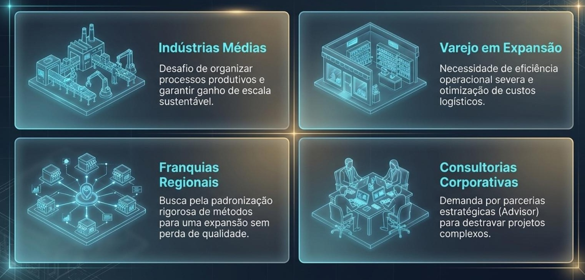
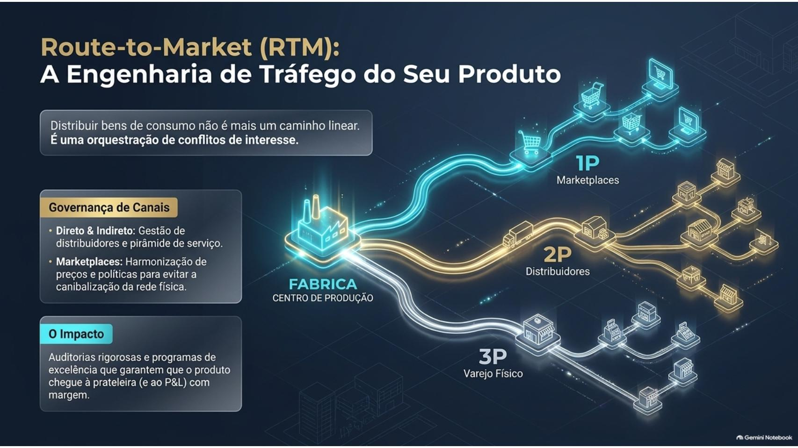
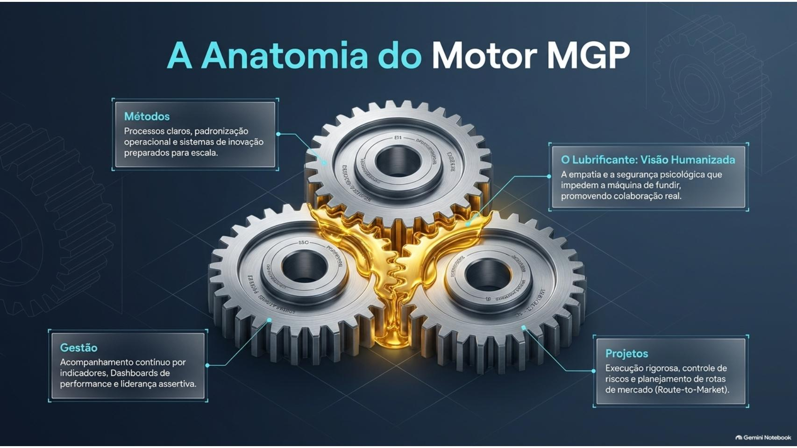
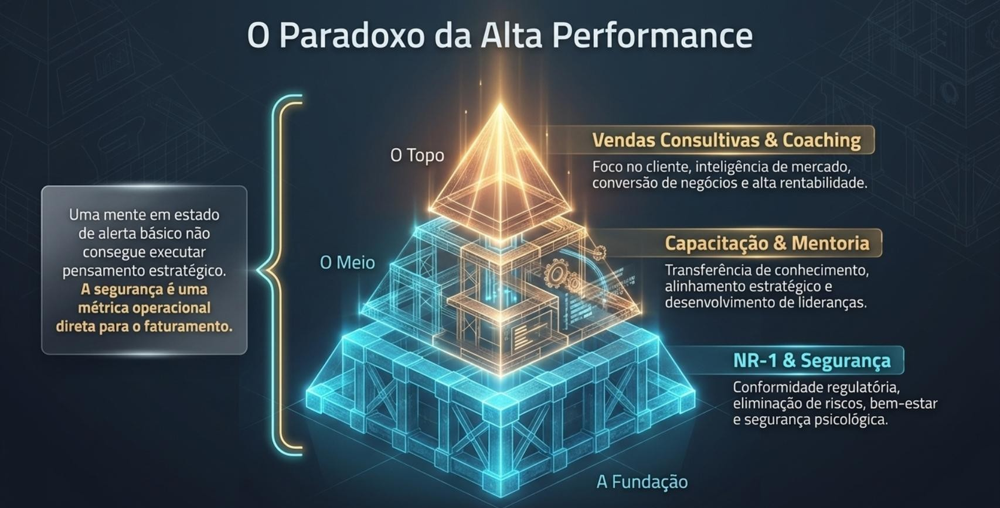
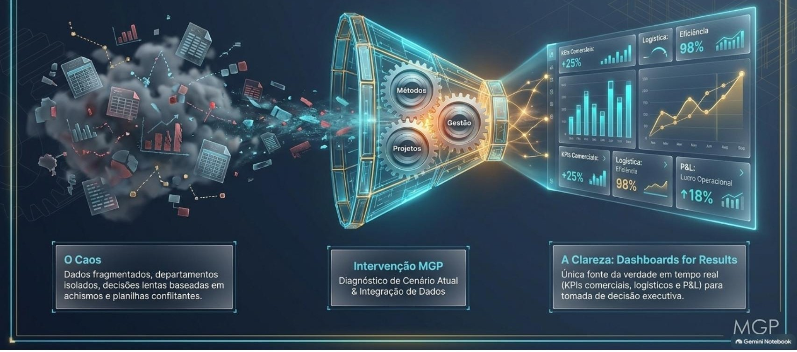
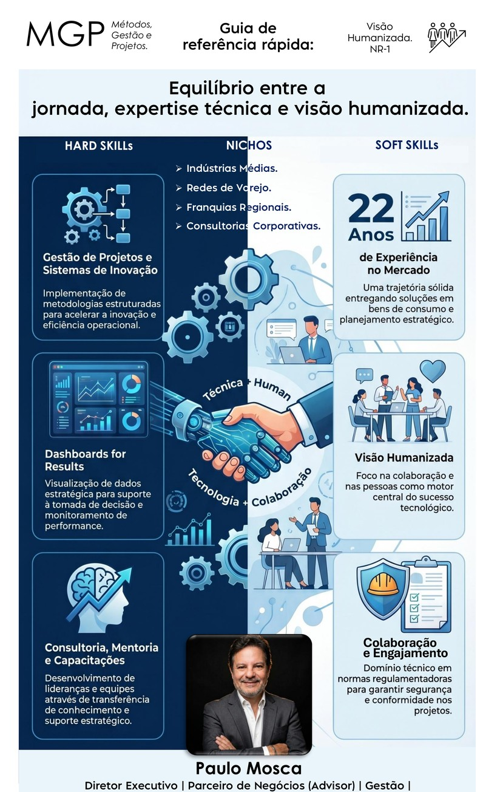
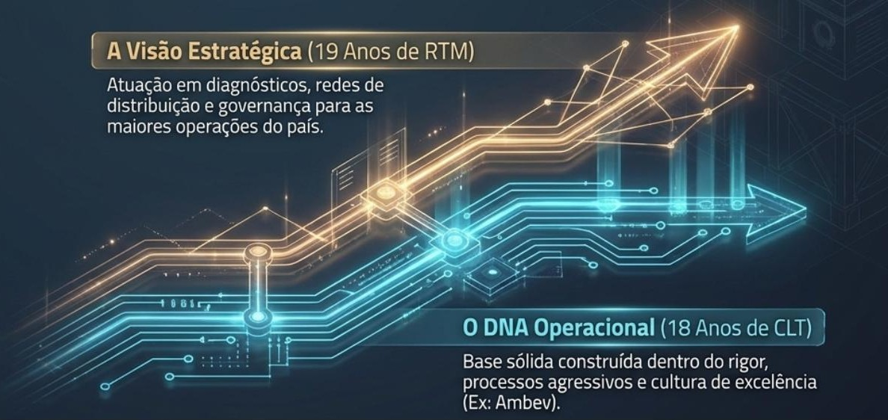
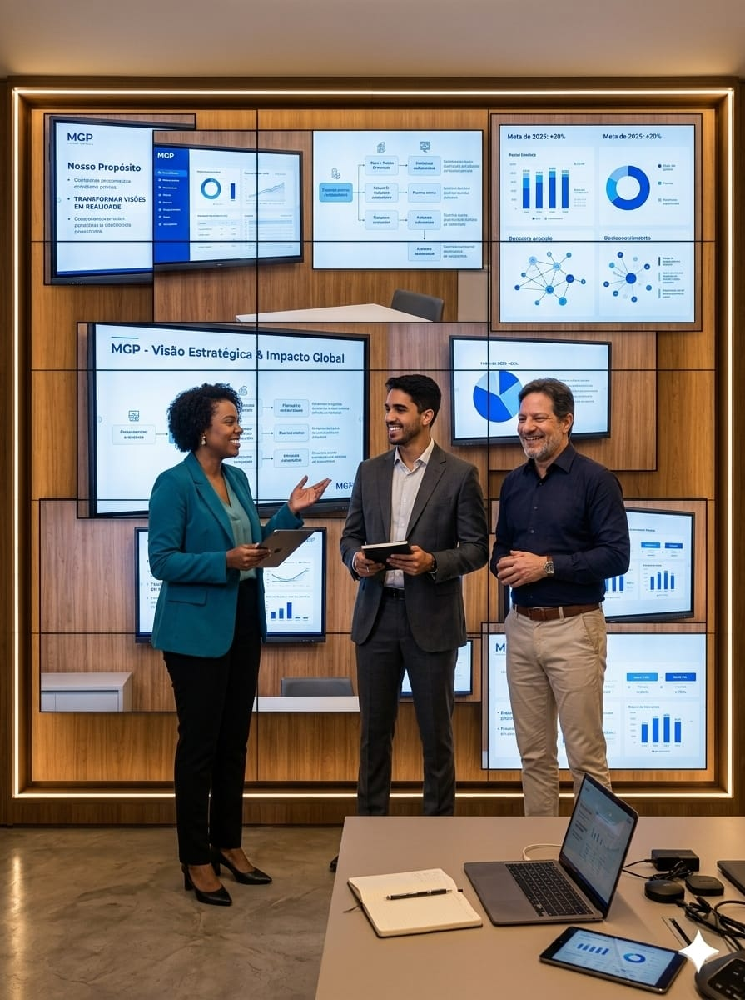
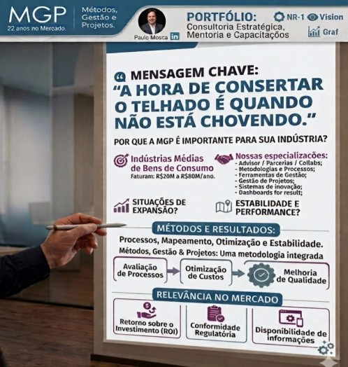
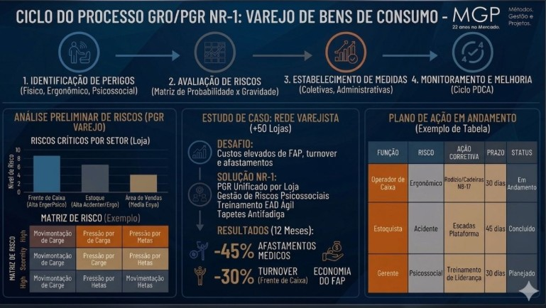

Conectando inteligência de dados, métodos estruturados e gestão humanizada para transformar a performance da sua empresa.
Com 22 anos de atuação no mercado, a MGP é referência na conexão entre inteligência de dados, processos operacionais estruturados e governança humanizada. Atuamos lado a lado com indústrias, varejos, franquias e consultorias para eliminar gargalos e acelerar o crescimento sustentável.

Bens de consumo, processos e ganho de escala.
Eficiência operacional e otimização de custos.
Padronização de métodos e expansão segura.
Parcerias estratégicas para projetos complexos.
Atuamos de forma personalizada junto a indústrias médias de bens de consumo, redes de varejo em expansão, franquias regionais e consultorias parceiras. Conhecemos de perto os desafios de organizar processos, otimizar malhas de distribuição e manter equipes engajadas.

O equilíbrio perfeito entre rigor técnico e capital humano.
Processos claros, padronização operacional, governança e sistemas de inovação preparados para escala.
Acompanhamento contínuo por indicadores, dashboards de performance e liderança assertiva.
Execução rigorosa, controle de riscos e planejamento de rotas de mercado (Route-to-Market).
Métodos e dados não geram resultados sozinhos. Na MGP - Métodos, Gestão e Projetos, unimos a eficiência operacional ao engajamento de pessoas, promovendo colaboração e segurança psicológica nas equipes.

Somos uma Consultoria Estratégica, promovemos Mentorias e realizamos Capacitações. Oferecemos serviços personalizados com destaque em:
Realizamos o mapeamento de oportunidades do Cliente, considerando ambiente interno e externo (insights). Realizamos análises das informações apresentando recomendações estratégicas e operacionais com planos de ações personalizados. Geramos dashboards for results para facilitar compartilhamento e alinhamento.
Método integrado para gestão orientada por resultados em processos otimizados com melhores práticas e planos de ações personalizados.
Ambiente colaborativo para alavancagem de KPIs (indicadores de performance) alinhados às OKRs (Objetivos-alvo) conduzindo as evoluções ao longo do tempo (curto, médio e longo prazo).
Planejamento e execução de workshops para capacitações das equipes comerciais com possibilidade de aplicação de Coachings em conformidade com a NR-1 (Norma Regulamentadora 1 - Fatores psicossociais e saúde mental).


Sólida experiência corporativa aliada à inovação estratégica e gestão de pessoas.

Liderada por Paulo Mosca, a MGP - Métodos, Gestão e Projetos conta com uma sólida bagagem executiva construída em grandes corporações do setor de bens de consumo e distribuição. Especialista em Sistemas de Informação e Administração, Paulo combina visão analítica de dados com estratégia comercial, governança corporativa e desenvolvimento contínuo de lideranças.

Acompanhe nossas análises de mercado, artigos executivos e áudios sobre gestão, métodos e inteligência operacional.

Ouça como a MGP equilibra ferramentas de inteligência analítica com segurança psicológica para eliminar atritos operacionais nas empresas.

Nossa metodologia integrada de processos propõe: Mapeamento, Otimização e Estabilidade.
Entregas de valor para o seu negócio:

Como aplicar fatores psicossociais e mentoria técnica para aumentar a produtividade das equipes sem gerar burnout.
Entre em contato com a MGP - Métodos, Gestão e Projetos e agende seu diagnóstico inicial.